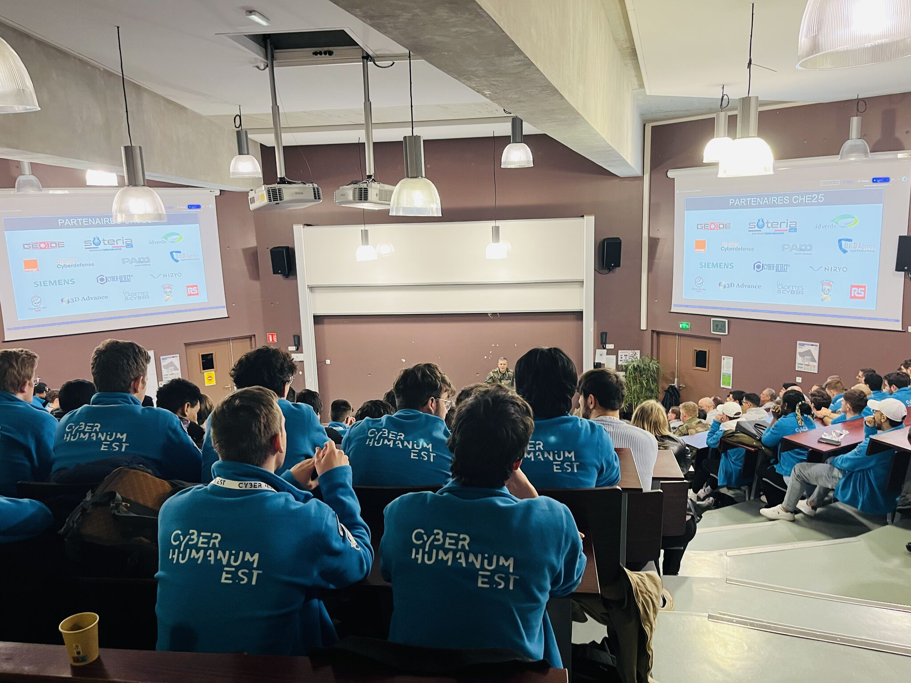
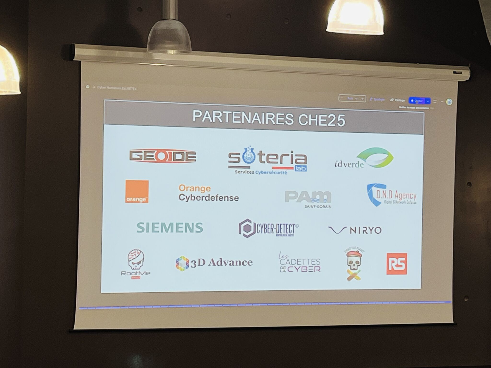

Suite à l'exercice, place au retour d'expérience (RETEX) en présence des 115 participants, des organisateurs, des partenaires et des représentants de l'armée française.
L'événement s'est tenu aux Mines de Nancy, où le directeur de l'école nous a accueillis chaleureusement.
Cette session de retour d'expérience a été l'occasion pour chacun de partager ses impressions et les enseignements tirés de l'exercice.
Les trois équipes engagées dans l'événement – Anumérique, APT et Cryptanga – ont présenté leur retour d'expérience devant l'assemblée.
Chaque équipe a exposé ses réussites, mais aussi les difficultés rencontrées au cours de l'exercice.
Rooxy, un des organisateurs, a pris la parole pour partager son regard sur l'événement. Il a notamment souligné l'implication des participants et la richesse des stratégies mises en place.
À la fin de cette session, les résultats finaux n'ont pas encore été dévoilés. Ceux-ci seront annoncés officiellement le lendemain lors de la cérémonie de remise des diplômes.
